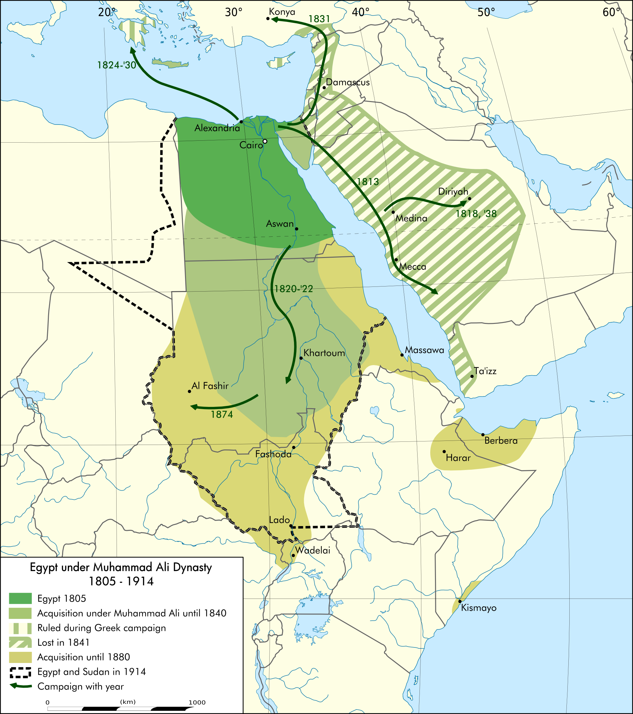
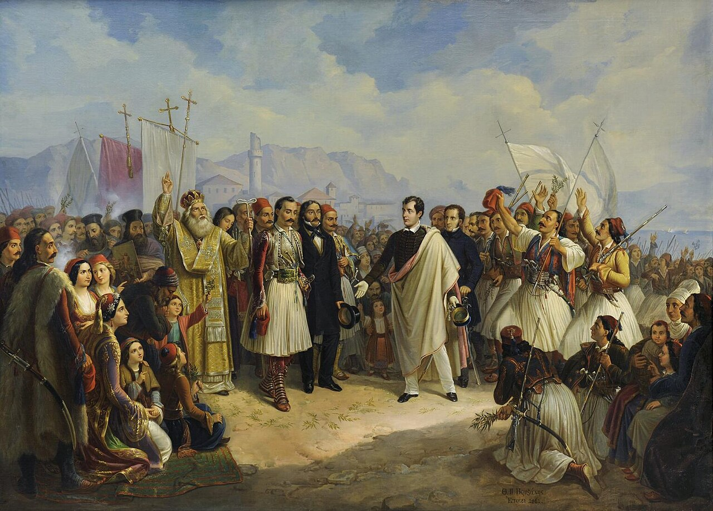
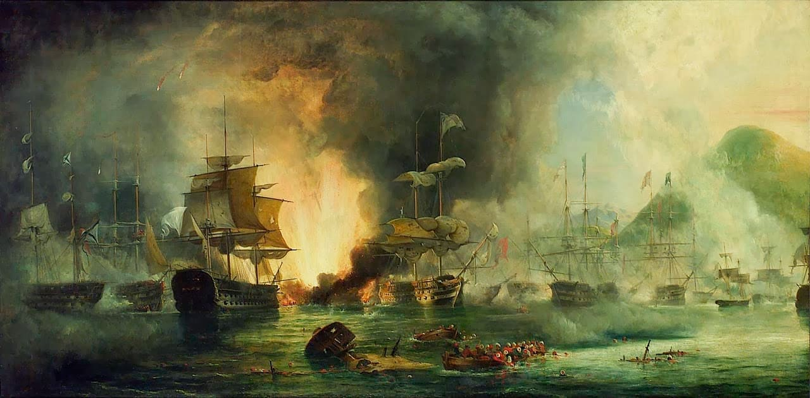
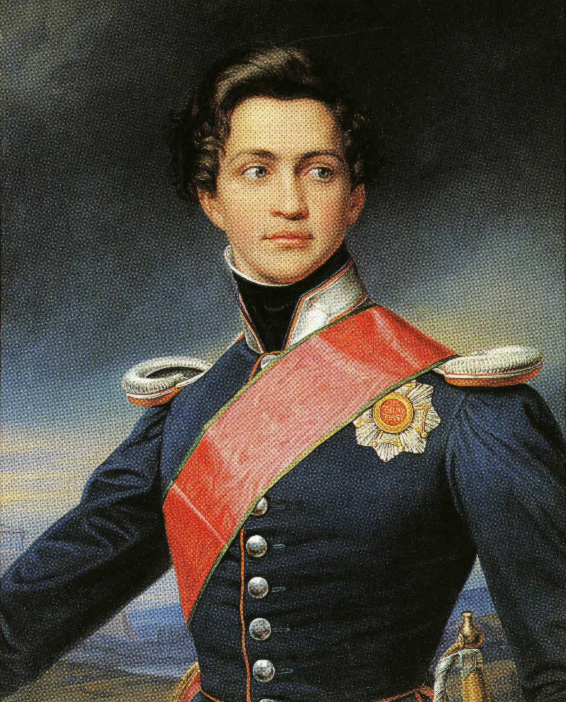
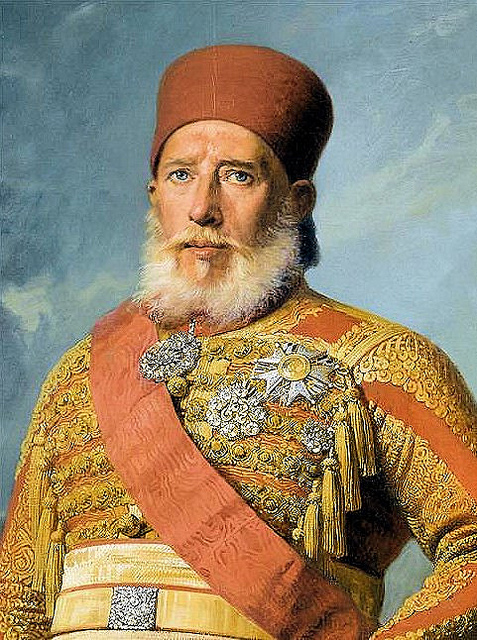
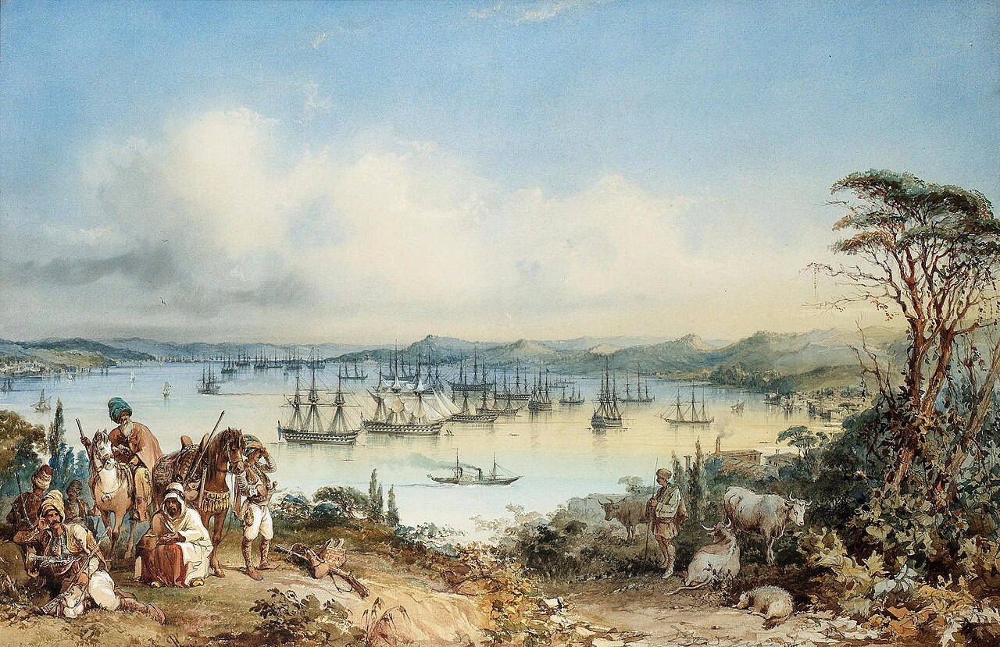

이스탄불 여행 (12) - 이집트인을 위한 이집트
게시: 2026-01-29T06:30:59+09:00
유럽을 다 정복할 기세였던 나폴레옹의 프랑스가 결국 러시아의 저력 앞에 무릎을 꿇자, 나폴레옹에게 기대어 러시아 견제를 노리던 오스만 투르크의 신세는 글자 그대로 낙동강 오리알이 되었습니다. 한 때 오스만 투르크의 호수 같았던 흑해는 이제 완전히 러시아에게 주도권이 넘어갔고, 오스만 투르크와 맺은 협약에 따라 러시아 상선은 흑해의 각종 산물을 실은 상선들을 보스포러스 해협을 통해 지중해로 자유롭게 왕래시킬 수 있었습니다. 그럼에도 불구하고 썩어도 준치라고, 오스만 투르크는 그리스부터 도나우강 유역을 거쳐 시리아와 이집트까지 이어지는 대제국을 명목상으로는 유지하고 있었습니다. 명목상이라는 표현을 쓴 것은 도나우강 유역의 왈라키아 및 몰다비아 등의 공국은 러시아를 등에 업고 사실상 독립국 행세를 이미 하고 있었으며, 이집트는 나폴레옹의 이집트 침공 때 현지에 파견되었던 일개 하급 장교였던 알리(Muhammad Ali) 파샤가 실권을 쥐고 역시 독립 왕국처럼 움직이고 있었기 때문이었습니다. 특히 알리 파샤는 1799년 아부키르 만에 상륙했다가 뮈라의 공격에 밀려나 바다로 뛰어든 뒤 용케 목숨을 건진 극소수의 생존자들 중 하나였습니다.

(전에도 소개드린 바 있는, 왈리키아와 몰다비아 공국의 위치입니다. 현재의 불가리아-루마니아 일대입니다.) 여기서 다루기엔 너무 긴 이야기를 통해, 어찌어찌 알리 파샤는 이집트의 실권자가 되었을 뿐만 아니라, 유럽, 특히 프랑스의 도움을 통해 근대적인 산업구조 개편과 교육제도 개혁 등 정말 제대로 된 부국강병 정책을 펼쳤습니다. 이렇게 제멋대로 정권을 손에 넣었을 뿐만 아니라 건방지게 반(半)독립을 추구하던 알리 파샤에 대한 이스탄불의 감정은 매우 좋지 않았습니다. 그러나 실력 앞에서는 장사가 없었습니다. 나중에는 현실을 인정한 이스탄불과의 협상을 통해 알리 파셔는 술탄으로부터 정식 이집트 총독으로 인정받았고, 사실상의 독립 번국을 이루어냈습니다. 고대 페르시아가 이집트를 정복한 이래로 알렉산드로스 제국, 로마 제국, 아랍 왕조 등을 거치는 내내 이집트는 언제나 타국의 식민지 신세였으나, 드디어 이집트가 독립 왕국이 되는 순간이었습니다.

(알리 파샤입니다. 사실 이 양반도 고향은 이집트가 아니라 알바니아입니다. 그의 개혁 정책의 대표적인 면을 보자면, 그는 이집트에서 여성들을 위한 의료 학교를 세워 여성들을 교육시켰습니다. 이슬람 세계에서요. 그 정도면 할 말 다했지요.)

(알리 파샤 치하에서의 이집트 왕국의 최대 영역입니다. 물론 결국 이 왕국은 오래 가지 못했습니다. 영국이 있었거든요. 다만 이 지도에서 보셔야 할 곳은 바로 저 Konya라는 아나톨리아의 지명과 거기로 향한 화살표입니다. 아나톨리아는 오스만 투르크의 본토잖아요? 감히 번국이 본국을 향해 군사작전을?) 원래 제국이 기울어질 때는 순식간에 우르르 무너지는 법입니다. 대부분 제국이라는 것은 필연적으로 여러 국가와 민족들을 힘으로 찍어눌러 만든 것인데, 그 힘이 약해지면 눌려살던 피지배자들이 들고 일어서기 때문입니다. 오스만 투르크의 경우는 종교와 민족 문제가 훨씬 복잡하게 얽혀 만들어진 제국이었으므로 당연히 사달이 났습니다. 가장 먼저, 그리고 가장 크게 일이 벌어진 곳이 바로 그리스였습니다. 그리스는 1821년 독립을 위한 반란에 들어갑니다.

(그리스 독립전쟁은 그 자체보다 오히려 영국 시인 바이런이 참전한 것으로 더 유명합니다. 바이런은 근친상간 및 이혼 등등 온갖 개인적 추문을 덮으려는 의도 및 범그리스주의라는 낭만적 동기에 의해 그리스 독립전쟁에 뛰어 들었습니다. 그의 그런 철없는 태도는 그리스로 가면서 화려한 투구와 갑옷의 맞춤 제작을 주문한 것에서 그대로 드러납니다. 그러나 그렇게 호메로스와 플루타르코스를 기대하며 그리스에 도착한 그를 기다리고 있는 것은 냉혹하고 지저분한 현실이었습니다. 저 그림 속에 묘사된 것처럼 그리스 코린트 만의 미솔롱기(Missolonghi)에 상륙한 지 얼마 되지 않아 그는 그리스 독립군 내부의 부정부패와 분열을 보고 '이들은 영웅이 아니라 장사꾼'이라며 개탄하기에 이르렀습니다. 그러나 바이런과 같은 수퍼스타가 참전했다는 사실 자체만으로도 그리스 독립운동에는 큰 도움이 된 것이 사실입니다. 뿐만 아니라, 바이런은 현재 가치로 따져 수억 원에 해당하는 자기 돈 4,000파운드를 독립운동에 지원하기도 했습니다. 다만 그는 곧 말라리아에 걸려 허무하게 세상을 떠났습니다.) 철없는 바이런조차 한심하게 정도로 그리스 독립군은 오합지졸이었지만, 문제는 오스만 투르크도 오랜 구태답습과 부정부패로 인해 그에 못지 않은 오합지졸이라는 점이었습니다. 게다가 유럽 문명의 기원지인 그리스를 오스만 투르크 손에서 구해내야 한다는 호소는 의외로 유럽 각국 정부와 귀족 신사계급을 움직여 유럽 각국의 지원이 쇄도하자, 오스만 투르크는 자체적인 힘으로는 도저히 그리스의 반란을 진압할 수 없는 지경에 이르게 되었습니다. 일이 이렇게 되자, 급해진 오스만 투르크의 술탄 마흐무드 2세(Mahmud II)는 평소 눈엣가시처럼 미워하던 이집트의 알리 파샤에게 도움을 요청했습니다. 형식적으로는 부하이지만, 실제로는 남의 나라나 다름없던 이집트에게 크레테와 시리아 등의 통치권을 넘겨줄 것이니, 이집트군을 동원하여 그리스 독립군을 진압해달라는 부탁이었습니다. 알리 파샤는 그에 응해 그의 아들 이브라힘(Ibrahim)의 지휘 하에 1만6천의 병력을 100척의 수송선과 63척의 호위함에 실어 그리스로 보냈습니다. 이집트군의 원정은 처음에는 성공하는가 싶었으나, 마니(Mani) 반도의 요새 공략에 실패하면서 난관에 빠지게 되었고, 결국 영국과 프랑스, 러시아의 연합함대와 이집트 해군 사이에 벌어진 1827년 나바리노(Navarino) 해전에서 이집트 해군이 대패하면서 사실상 별 성과없이 끝나게 되었습니다.

(1827년 그리스 펠로폰네소스 반도 남서쪽 해안에서 벌어진 나바리노 해전입니다. 영국-프랑스-러시아 연합함대는 10척의 전열함과 10척의 프리깃함을 동원했고, 이집트-오스만 연합함대는 3척의 전열함과 17척의 프리깃함, 그 밖에 30척의 더 작은 코르벳함을 동원했습니다. 이 전투에서 알리 파샤가 많은 돈과 공을 들여 건조했던 이집트 해군의 근대적 함대 대부분이 파괴됩니다. 연합함대는 단 1척의 전열함도 잃지는 않았으나 수백 명의 전사자와 함께 전열함들도 큰 손상을 입어 대부분 본국의 정비창에서 대규모 수리를 받아야 했습니다.) 그리스도 결국 독립을 쟁취했고, 이 독립은 1832년 바이에른의 오토(Otto)가 초대 그리스 왕국 국왕으로 등극하고 콘스탄티노플 조약으로 국경선을 확립하면서 확고히 인정됩니다.

(바이에른의 오토입니다. 바이에른 국왕 루드비히 1세의 차남인 그는 이 그림이 그려지던 1833년 불과 18살, 정말 꽃다운 나이였지요. 기껏 피 흘리며 싸워 얻은 독립 그리스 왕국 국왕으로 웬 독일계 왕자를 데려오다니 우리들 정서로서는 이해가 가지 않는 일이지만, 원래 유럽에서는 저렇게 외국 귀족을 국왕으로 모시는 일이 흔히 있었습니다. 지금 영국 왕가도 독일계 가문이고, 현 스페인 왕가는 프랑스 부르봉 왕가의 직계 후손이지요.) 진짜 문제는 그 이후에 벌어집니다. 그리스도 독립해버려 더욱 쪼그라든 오스만 투르크에게, 이집트의 알리 파샤가 청구서를 내민 것입니다. 전쟁이야 졌지만, 아무튼 이집트는 요구한 대로 참전하여 피를 흘렸으니 원래 약속대로 크레테와 시리아 등을 내놓으라는 것이었지요. 그러나 사람 마음이란 화장실 문을 열 때와 닫을 때가 다른 법인데, 하물며 승전하지도 못한 상황에서 순순히 땅을 갈라주기는 더욱 싫었습니다. 이스탄불은 알리 파샤의 요구를 거절했습니다. 그러자 알리 파샤는 즉각 반응했습니다. 아직 그리스 독립이 완전히 승인되기도 전인 1831년, 또 아들 이브라힘에게 군대를 끌고 오스만 투르크에 대한 공격에 나선 것입니다. 이브라힘이 이끈 이집트군은 파죽지세로 팔레스타인과 시리아를 거쳐 오스만 투르크 본토까지 침공했습니다.

(이브라힘 파샤의 초상화입니다. 1846년 그려진 초상화로서, 당시 그의 나이는 57세였습니다. 그는 아버지 알리 파샤의 뒤를 나름대로 잘 이었다고 할 수 있습니다. 그러나 부자는 3대를 못 간다고, 그가 2년 뒤인 1848년 사망하고 그의 뒤를 이은 알리 파샤의 손자 압바스 1세는 온갖 반동적인 정책을 펼쳐, 할아버지가 애써 일군 이집트 근대화의 기초를 제대로 흔들어 놓습니다. 그래서 결국 이집트는 영국의 식민지 신세가 되지요.) 이스탄불에서도 발끈했습니다. 평소 건방지기 짝이 없었떤 이집트의 알리 파샤를 이 기회에 제대로 손보자고 작정한 이스탄불은 15만 대군을 편성하여 이브라힘의 10만 이집트군과 싸우도록 했습니다. 그러나 이집트군이 유럽 열강들의 군대와 겨루었을 때는 힘이 딸렸을지 몰라도, 온갖 구태와 부정으로 썩은 오스만 투르크군 앞에서는 호랑이나 다름없었습니다. 이집트군 1만5천과 오스만 투르크군 5만3천이 맞붙은 1832년 12월의 코냐(Konya) 전투에서 이집트군은 대승을 거둡니다. 이제 이집트군은 아나톨리아 일대를 석권하고 곧 보스포러스 해협을 건너 이스탄불을 노릴 위치에 서게 되었습니다. 1453년 오스만 투르크가 해낸 콘스탄티노플 점령을, 1833년에 이집트군이 재현하지 못할 이유는 없었습니다. 일이 이렇게 되자 이스탄불은 진짜 충격과 공포에 빠졌습니다. 술탄 마흐무드 2세는 체면이고 뭐고 영국과 프랑스에게 군사 지원을 요청했지만 이들은 모두 고개를 저었습니다. 너무나 급해진 마흐무드 2세는 철천지 원수인 러시아에게까지 손을 내밀었습니다. 호시탐탐 보스포러스 해협을 노리던 러시아가 이런 초대장을 마다할 리가 없었습니다. 러시아는 즉각 1개 군단급 규모인 2~3만의 병력을 파병했고, 이들은 오스만 투르크 본토인 아나톨리아 심장부까지 그대로 행진해 들어와 이집트군을 견제했습니다. 이집트군도 이렇게 강력한 규모의 러시아군 앞에서는 주춤거릴 수밖에 없었습니다. 결국 알리 파샤는 시리아와 팔레스타인 등 이미 무력으로 손에 넣은 영토를 차지하는 선에서 오스만 투르크와 평화 협정을 체결하고 물러났습니다. 물론 러시아가 무료로 이런 군사 서비스를 해준 것은 아니었습니다. 1833년 7월 러시아군이 순순히 물러나기 2일 전, 이스탄불은 러시아와 휜캬르 이스켈레시(Hünkâr İskelesi, 술탄의 부두라는 뜻) 조약을 체결했습니다. 그 내용은 러시아와 오스만 투르크 사이의 방어 협력에 대한 훈훈한 내용이었습니다만, 그 자세한 내용이 유럽 정계에 알려지자 영국과 프랑스는 펄쩍 뛰었습니다. 기존에 맺었던 1774년 퀴취크 카이나르자 조약에서, 이미 러시아는 상선이 다다넬즈-보스포러스 해협을 자유롭게 통과할 권리를 얻은 바 있었습니다만, 이번 휜캬르 이스켈레시 조약에서는 '필요시 러시아가 요청하면' 타국 군함의 다다넬즈-보스포러스 통과를 봉쇄한다는 조항이 들어 있었던 것입니다. 즉, 영국이나 프랑스 등 다른 유럽 열강들의 군함은 흑해로 들어갈 수 없고, 러시아 군함은 지중해와 흑해를 자유롭게 드나들게 되었으므로, 이제 흑해가 사실상 러시아의 안전한 호수가 된 것입니다. 다만 이 조약에서는 '러시아 군함은 자유로운 통과가 언제든 가능하다'는 직접적인 표현이 없었으므로, 그 해석을 놓고 유럽 각국이 한바탕 논란을 벌여야 했습니다. 이 휜캬르 이스켈레시 조약은 영국 등 유럽 열강들이 오스만 투르크의 지정학적 위치의 중요성을 새삼 깨닫는 계기가 되었습니다. 가뜩이나 팽창하는 러시아를 견제하기 위해서는, 다다넬즈-보스포러스 해협을 러시아 군함이 자유롭게 통과하는 일은 어떻게 해서든 막아야 한다는 절박함을 통감하게 된 것입니다. 아울러 오스만 투르크의 생존이 유럽 전체의 균형을 위해서도 필요하다는 의견이 모아졌습니다. 결국 이 휜캬르 이스켈레시 조약을 사실상 무력화시키는 조약이 1841년 런던에서 맺어집니다. 바로 1841년 런던 해협 조약(London Straits Convention)으로서, 그 주된 내용은 다다넬즈-보스포러스 해협은 오스만 투르크 외의 그 어떠한 나라의 군함도 통과할 수 없도록 하는 것이었습니다. 결국 허물어지는 오스만 투르크 제국이 보스포러스 해협의 지정학적 중요성 덕분에 목숨을 부지하게 된 셈이었습니다. 이로써 보스포러스 해협을 유럽 군함들이 통과하는 일은 영영 일어나지 않았을까요? 그럴 리가 없었습니다. 불과 12년 뒤에 크림 전쟁(Crimean War)이 터지면서 영국과 프랑스 군함들이 보스포러스 해협을 메우게 됩니다.

(1853년, 보스포러스 해협에 정박한 영국 로열네이비 군함들의 모습입니다. 프레치오시(Amedeo Preziosi)라는 말타 태생의 이탈리아계 화가 작품인데, 그는 오스만 투르크에서 작품 활동을 했습니다.)